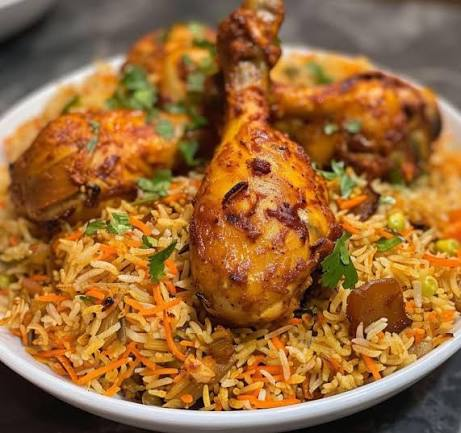

Biryani is a fragrant, spiced rich dish layared with marinated
chicken and slow-cooked to perfection.
This page is a lab report project covering HTML and CSS basics.
Note: This recipe is a simplified version for educational purposes.

Nutrition note : One serving has roughly 450 kcal. Saffron's active compound is C20H24O, which gives the dish its golden color. The spice level is rated 3rd out of 5 for heat intensity.
Good biryani is not rushed; it is layered with care and cooked with patience. The aroma alone is worth the wait!
As one chef once said, Cooking is an art, and biryani is its masterpiece.
The term Basmati refers to a long-grain rice variety that is commonly used in biryani for its fragrance and texture.
Made with
- Basmati rice
- Chicken marinated in yogurt and spices
- Saffron-infused milk
- Fried onions and fresh herbs
- Slow-cooked to perfection
Learn more about the dish on Wikipedia
See more recipes: More Recipes
| Nutrient | Amount | Notes | |
|---|---|---|---|
| Calories | 450 kcal | Approx | Varies by portion size |
| Protein | 30g | Approx | |
Email: chef@biryani.com
Phone: +880 1234567890